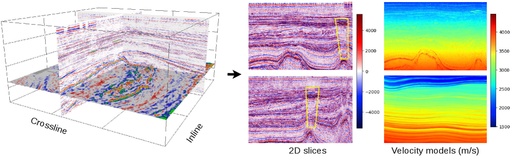
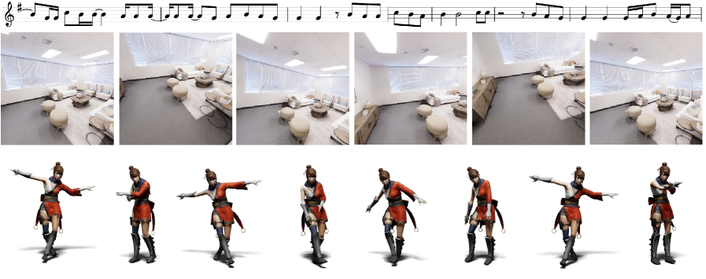
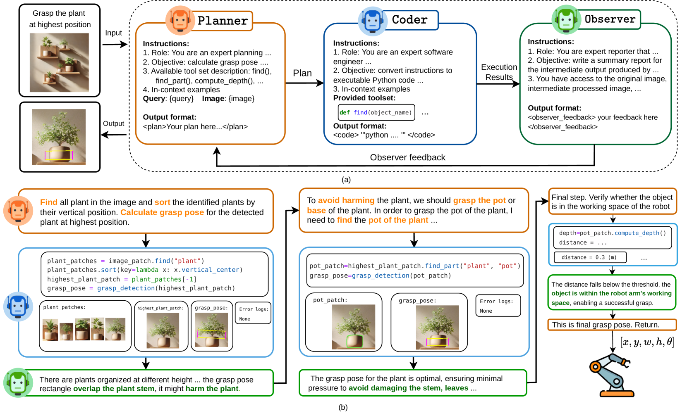
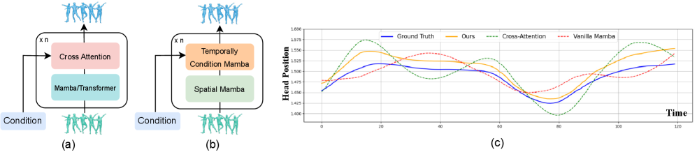
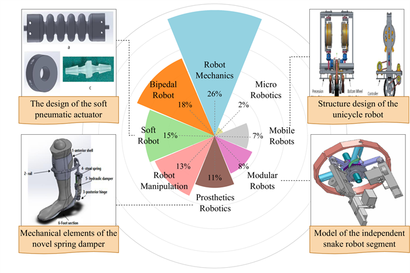

About Me
I am a robotics and AI enthusiast. I currently work as an AI Manipulation Engineer at VinDynamics, and previously worked as an AI Research Resident at FPT Software AI Center, under Prof. Anh Nguyen.
Research Interests
Nowadays, I'm particularly interested in:
- Vision-language-action models: Enabling robots to translate natural language and visual perception into language-driven grasping and dexterous, in-hand manipulation.
- World models: Learning predictive models of the physical world so that robots can anticipate the consequences of their actions and plan ahead.
- Generative models of motion: Designing generative models, including physics-informed ones, that synthesize realistic and physically plausible motion.
Experience
-
AI Manipulation Engineer Dec 2025 – PresentVinDynamics — Humanoid Robot Research (Hand Development Team), Hanoi
- Developing methods for dexterous hand manipulation, agentic manipulation system, and vision–language–action (VLA) models.
- Building teleoperation systems for robot hand and arm, motion-retargeting algorithms.
- Building simulation environments and robot integration with Isaac Sim, MuJoCo, and ROS.
-
AI Research Resident Jul 2024 – Nov 2025FPT Software AI Center, Hanoi
- Multimodal robot learning, human-motion learning, and LLM-based multi-agent systems.
News
- Mar 2026SIGMA, a physics-based benchmark for gas-chimney understanding in seismic images, is accepted to CVPR 2026! 🎉
- Sep 2025Temporally Conditional Mamba for human motion learning is accepted to SIGGRAPH Asia 2025.
Publications
(* denotes equal contribution. See my Google Scholar for the full list.)




Academic Services
- Reviewer: IEEE/RSJ International Conference on Intelligent Robots and Systems (IROS) 2026.